Unique monster
英語版 CrawlWiki の記事「Unique monster」(0.34 向け、2026-10-02 版)の翻訳です。原文の著者は編集履歴をご覧ください。
ユニークモンスター(unique monster)は、1 回のゲームで多くても一度しか生成されないモンスターだ。たいていは普通のモンスターよりずっと強いが、そのぶん得られる経験値もはるかに多い。Crawl の「ボスモンスター」と考えてよい(とはいえ、どのユニークも毎回必ず出てくるわけではないし、出会ったユニークを全部倒さなければならないわけでもない)。
ユニークの中には、もっと若いころや年を取ったあとの別バージョンがいる者もいる。1 回のゲームで出会うのは、そのうちどちらか一方だけだ。
目次
放浪するユニーク
- i
 放浪者アグネス: すばしこいスプリガンの戦士。ブランド付きのラジャタンを振るう。
放浪者アグネス: すばしこいスプリガンの戦士。ブランド付きのラジャタンを振るう。 - S
 怠慢なる番人アイズル: 面目を失った守護の大蛇。強力な毒の魔法と、厄介な眠りの呪文を使う。
怠慢なる番人アイズル: 面目を失った守護の大蛇。強力な毒の魔法と、厄介な眠りの呪文を使う。 - 6
 悪魔的なる毒殺者アマイモン: 悪魔の血族の毒使い。仲間の毒を強めることができる。
悪魔的なる毒殺者アマイモン: 悪魔の血族の毒使い。仲間の毒を強めることができる。 - H
 追放されしアラクネ: 半分が蜘蛛、半分が女の姿をしている。アラクネとそのペットは、うっかり出くわした者をあっという間に絡めとって毒を浴びせる。蜘蛛の穴ぐらがないゲームでだけ現れる。
追放されしアラクネ: 半分が蜘蛛、半分が女の姿をしている。アラクネとそのペットは、うっかり出くわした者をあっという間に絡めとって毒を浴びせる。蜘蛛の穴ぐらがないゲームでだけ現れる。 - H
 堕落せし王アステリオン: ミノタウロスに変えられて追放された、血に飢えた王。いまはマクレブの力を借りて、新しい王国を切り拓こうとしている。
堕落せし王アステリオン: ミノタウロスに変えられて追放された、血に飢えた王。いまはマクレブの力を借りて、新しい王国を切り拓こうとしている。 - R
 永劫の炎のアズラエル: 炎のモンスターの群れを率いるイフリート。自分は高威力の炎の魔術と天罰を撃ち込んでくる。
永劫の炎のアズラエル: 炎のモンスターの群れを率いるイフリート。自分は高威力の炎の魔術と天罰を撃ち込んでくる。 - d
 白蛇の婦人白娘子: ゲーム後半に出てくるドラコニアンで、ヒドラの召喚を使う。深手を負うと、嵐の雲をまとったストームドラゴンに変身する。
白蛇の婦人白娘子: ゲーム後半に出てくるドラコニアンで、ヒドラの召喚を使う。深手を負うと、嵐の雲をまとったストームドラゴンに変身する。 - o
 吸血オークのブロークラ: オークの吸血鬼。虹のあらゆる色の魔法を使い、死ぬ代わりに吸血コウモリの群れに分かれることができる。
吸血オークのブロークラ: オークの吸血鬼。虹のあらゆる色の魔法を使い、死ぬ代わりに吸血コウモリの群れに分かれることができる。 - L
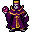
生と死の熟達者ボリス: 倒されても別の場所でよみがえるのが得意なリッチ。 - @
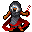
呪われし預言者カサンドラ: 人間のユニーク。破滅の矢と破滅の予言で、あなたに破滅を与えてくる。 - j
 啓蒙されし狂人ヰゥフ: クロークをまとった、正気でないノール。混沌の六尺棒で森の小屋を守っている。
啓蒙されし狂人ヰゥフ: クロークをまとった、正気でないノール。混沌の六尺棒で森の小屋を守っている。 - @
 冒険者ドナルド: あなたとよく似た冒険者だが、泳ぐのと愚痴をこぼすのが好き。たいてい反射のカイトシールドを持っている。
冒険者ドナルド: あなたとよく似た冒険者だが、泳ぐのと愚痴をこぼすのが好き。たいてい反射のカイトシールドを持っている。 - e
 e
e  デュヴェッサの双子の兄ドウェンとドウェンの双子の妹デュヴェッサ: いつも一緒にいて、互いの長所で互いを補い合う双子のエルフ。ドウェンは魔法を使い、デュヴェッサは剣で戦う。
デュヴェッサの双子の兄ドウェンとドウェンの双子の妹デュヴェッサ: いつも一緒にいて、互いの長所で互いを補い合う双子のエルフ。ドウェンは魔法を使い、デュヴェッサは剣で戦う。 - @
 シグムンドの弟エドマンド: シグムンドの弟。兄より影が薄く、怖さもだいぶ劣る。たいてい質の良いフレイルを持っている。
シグムンドの弟エドマンド: シグムンドの弟。兄より影が薄く、怖さもだいぶ劣る。たいてい質の良いフレイルを持っている。 - i
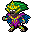
女呪術師: スプリガンの女王。攻撃を当てるのがとにかく難しいうえに、たちの悪い呪術をひととおり使う。今も残る数少ないフェアリードラゴンの鱗一式のひとつを持っている。 - x
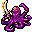
燃えさかる気性のエリカ: オクトポードの呪文使い。火炎のシミターを持っているが、手持ちの妖術や呪術で戦うほうを好む。 - O
 狡猾なるエロルカ: オーガの魔術師。運の悪い者は、とても行ける段階ではないうちにアビスへ追放されかねない。
狡猾なるエロルカ: オーガの魔術師。運の悪い者は、とても行ける段階ではないうちにアビスへ追放されかねない。 - @
 偉大なるエウスタキオ: 口ひげをたくわえた召喚術師。哺乳類やインプを群れで呼び出して、敵の足を止める。
偉大なるエウスタキオ: 口ひげをたくわえた召喚術師。哺乳類やインプを群れで呼び出して、敵の足を止める。 - e
 冷血なるファンナール: エルフの氷の魔術師で、氷の魔術を強める装備を持って現れる。冷気耐性を用意していこう。
冷血なるファンナール: エルフの氷の魔術師で、氷の魔術を強める装備を持って現れる。冷気耐性を用意していこう。 - @
 パンデモニウムの女公爵フランセス: かつて魔王を打ち負かし、悪魔の力を手に入れた強力な戦士。
パンデモニウムの女公爵フランセス: かつて魔王を打ち負かし、悪魔の力を手に入れた強力な戦士。 - @
 完全無欠のフレデリック: 極めて強力な呪文をいくつも備えた、神々の末裔の魔法戦士。
完全無欠のフレデリック: 極めて強力な呪文をいくつも備えた、神々の末裔の魔法戦士。 - w
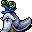
重厚なるガストロノク: やけに頭の良い象ナメクジ。魔術師を食べて、その魔法と帽子を手に入れた。 - 5
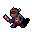
グラインダー: 低レベルの冒険者なら簡単に麻痺させて、なぶり殺しにしてしまう影のインプ。 - j
 狩人グルム: 長柄武器を持ち、狼の群れを率いて戦うノール。グルンの若いころの姿。
狩人グルム: 長柄武器を持ち、狼の群れを率いて戦うノール。グルンの若いころの姿。 - j
 罰せられしグルン: 呪われてアンデッドになったノール。忘却の猟犬の群れを連れて、迷宮の深い階で狩りをしている。グルムの年老いた姿。
罰せられしグルン: 呪われてアンデッドになったノール。忘却の猟犬の群れを連れて、迷宮の深い階で狩りをしている。グルムの年老いた姿。 - @
 年月を重ねしものハロルド: 引退間近の賞金稼ぎ。標的を逃がさない技を得意とする。
年月を重ねしものハロルド: 引退間近の賞金稼ぎ。標的を逃がさない技を得意とする。 - g
 好奇心旺盛なイジェィブ: 大事故で外骨格スーツを壊してしまい、追放されたコグリン。それでも危険なワンドを持っている。
好奇心旺盛なイジェィブ: 大事故で外骨格スーツを壊してしまい、追放されたコグリン。それでも危険なワンドを持っている。 - F
 バラチの夢想家ジェレマイア: 闇の神に命じられるまま、眠ったまま迷宮をさまようバラチ。その夢は、いつまでも消えない蝶の群れとなって現れる。
バラチの夢想家ジェレマイア: 闇の神に命じられるまま、眠ったまま迷宮をさまようバラチ。その夢は、いつまでも消えない蝶の群れとなって現れる。 - @
 見習い魔法使いジェシカ: 見習いの女魔法使い。邪魔をする者を低レベルの呪文で攻撃する。
見習い魔法使いジェシカ: 見習いの女魔法使い。邪魔をする者を低レベルの呪文で攻撃する。 - g
 大地を揺らす者ジョーグルン: 彫像に目がないドワーフの地の精霊使い。作るのも爆破するのも好きだ。
大地を揺らす者ジョーグルン: 彫像に目がないドワーフの地の精霊使い。作るのも爆破するのも好きだ。 - V
 血まみれ伯爵ジョリー: 裕福な吸血鬼。魅了と、壊滅的な威力の魔法を組み合わせてくる。
血まみれ伯爵ジョリー: 裕福な吸血鬼。魅了と、壊滅的な威力の魔法を組み合わせてくる。 - @
 傭兵ジョセフ: 投げ網とスリングと六尺棒の扱いに長けた傭兵。帽子はウィーグラフから奪ったものだ。
傭兵ジョセフ: 投げ網とスリングと六尺棒の扱いに長けた傭兵。帽子はウィーグラフから奪ったものだ。 - @
 腐敗せる死人使いジョセフィーヌ: ひからびた死人使い。鬼火の火球を放って、生者を痛めつけつつ配下のアンデッドを支える。ジョセフィーナの若いころの姿。
腐敗せる死人使いジョセフィーヌ: ひからびた死人使い。鬼火の火球を放って、生者を痛めつけつつ配下のアンデッドを支える。ジョセフィーナの若いころの姿。 - L
 氷のリッチ ジョセフィーナ: 強力な氷の魔術で、自分を氷のリッチに変えた死人使い。配下のアンデッドを爆弾代わりに使う。ジョセフィーヌの年老いた姿。
氷のリッチ ジョセフィーナ: 強力な氷の魔術で、自分を氷のリッチに変えた死人使い。配下のアンデッドを爆弾代わりに使う。ジョセフィーヌの年老いた姿。 - M
 不滅のファラオ クフ王: 王族のミイラ。高い耐久力に打擲の一撃と苦痛、さらに極めて危険なミイラと悪魔の取り巻きまでそろえている。
不滅のファラオ クフ王: 王族のミイラ。高い耐久力に打擲の一撃と苦痛、さらに極めて危険なミイラと悪魔の取り巻きまでそろえている。 - @
 秘蹟の編み手キルケー: 魔女。あなたを自分の豚の群れに加えることを、何よりも望んでいる。
秘蹟の編み手キルケー: 魔女。あなたを自分の豚の群れに加えることを、何よりも望んでいる。 - O
 雷鳴のロドゥル: 同族のオーガを勧誘する任務を帯びて、宝物庫の外へ送り出された鉄縛の雷巨人。
雷鳴のロドゥル: 同族のオーガを勧誘する任務を帯びて、宝物庫の外へ送り出された鉄縛の雷巨人。 - @
 崩壊せし者ルイーズ: 呪文使いのくせに意外なほど重い鎧を着込んでいる。油断しているとアビスへ追放される。
崩壊せし者ルイーズ: 呪文使いのくせに意外なほど重い鎧を着込んでいる。油断しているとアビスへ追放される。 - R
 幻影の王マーラ: 並外れて強力なラクシャーサ。幻影を極めたマーラは、どんなに強い相手でも手玉に取る。冒険者は自分の分身と戦うはめになるかもしれない。
幻影の王マーラ: 並外れて強力なラクシャーサ。幻影を極めたマーラは、どんなに強い相手でも手玉に取る。冒険者は自分の分身と戦うはめになるかもしれない。 - @
 うぬぼれ屋のマギー: ごく普通の竜の鱗をまとった、野心あふれる若い火の精霊使い。マージェリーの若いころの姿。
うぬぼれ屋のマギー: ごく普通の竜の鱗をまとった、野心あふれる若い火の精霊使い。マージェリーの若いころの姿。 - @
 ドラゴン殺しマージェリー: 地獄の騎士の取り巻きを従えた、熟練の火の精霊使い。マギーの年を重ねた姿。
ドラゴン殺しマージェリー: 地獄の騎士の取り巻きを従えた、熟練の火の精霊使い。マギーの年を重ねた姿。 - f
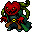
盗賊モーリス: 腕利きの歩き蔓の盗賊。透明化を使って、通りがかった者から根こそぎ盗んでいく。 - M
 塵の貴公子メンカウラー王: とうに忘れ去られた王国の、ミイラになった王。敵に苦痛を与えてくる。
塵の貴公子メンカウラー王: とうに忘れ去られた王国の、ミイラになった王。敵に苦痛を与えてくる。 - A
 ジンの代弁者メナス: 強力な天使。足が速いうえに静寂のオーラをまとっているので、逃げるのがとても難しい。呪文使いは要注意。
ジンの代弁者メナス: 強力な天使。足が速いうえに静寂のオーラをまとっているので、逃げるのがとても難しい。呪文使いは要注意。 - X
 形なき恐怖ムリオグロトル: ルゴヌの信者だったが、いまや汚染されたのたうつ肉塊同然になってしまった。そこにいるだけで現実をゆがめる。
形なき恐怖ムリオグロトル: ルゴヌの信者だったが、いまや汚染されたのたうつ肉塊同然になってしまった。そこにいるだけで現実をゆがめる。 - h
 生と死の下僕ナターシャ: 行方知れずの主人を探してさまよう、フェリッドの在野の魔術師。命を三つ持っている。
生と死の下僕ナターシャ: 行方知れずの主人を探してさまよう、フェリッドの在野の魔術師。命を三つ持っている。 - o
 堕ちたる者たちの伝承の守り手ネルガレ: オークの歴史家。遠い昔のオークを幽体として呼び出し、自分のために戦わせる。
堕ちたる者たちの伝承の守り手ネルガレ: オークの歴史家。遠い昔のオークを幽体として呼び出し、自分のために戦わせる。 - c
 射撃の名手ネッソス: 鎧をまとったセントール。毒と炎を帯びた矢を敵に浴びせてくる。
射撃の名手ネッソス: 鎧をまとったセントール。毒と炎を帯びた矢を敵に浴びせてくる。 - z
 悼まれぬ者たちの怨念 名無し: 数えきれないほどの忘れられた魂からできたレヴナント。魂が死んだときの記憶を燃やして、傷を癒やしたり呪文セットを得たりする。
悼まれぬ者たちの怨念 名無し: 数えきれないほどの忘れられた魂からできたレヴナント。魂が死んだときの記憶を燃やして、傷を癒やしたり呪文セットを得たりする。 - @
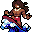
哲学者ノリス: のんびり屋の死の教団員。海(と何匹かのサメ)を連れ歩いて、彼なりの平和を広めている。 - @
 狂気の発明者ニコラ: あらゆる種類の電気を使いこなして戦う、狂気の科学者。
狂気の発明者ニコラ: あらゆる種類の電気を使いこなして戦う、狂気の科学者。 - T
 弱気なパルギ: 仲間のもとから逃げ出して、迷宮の浅い階にやってきた、やけに痩せたトロル。パーギットの若いころの姿。
弱気なパルギ: 仲間のもとから逃げ出して、迷宮の浅い階にやってきた、やけに痩せたトロル。パーギットの若いころの姿。 - T
 強大なるパーギット: ゾットのオーブを目指して進む、重装備のトロル。数々の戦いをくぐり抜けてきたおかげで、まったくばかげた再生能力を身につけている。パルギの年老いた姿。
強大なるパーギット: ゾットのオーブを目指して進む、重装備のトロル。数々の戦いをくぐり抜けてきたおかげで、まったくばかげた再生能力を身につけている。パルギの年老いた姿。 - K
 魂の商人ピケル: 地獄相手の魂の売買に手を染めたコボルドの山賊。ブランド付きの鞭を持ち、レムレースの一団を連れている。
魂の商人ピケル: 地獄相手の魂の売買に手を染めたコボルドの山賊。ブランド付きの鞭を持ち、レムレースの一団を連れている。 - F
 リビット王子: 呪いをかけられて、またたきガエルの姿から戻れなくなった王子。
リビット王子: 呪いをかけられて、またたきガエルの姿から戻れなくなった王子。 - @
 狂気の女魔術師プシュケ: 正気を失った魔術師。ダガーも呪文も同じくらい予測がつかない。
狂気の女魔術師プシュケ: 正気を失った魔術師。ダガーも呪文も同じくらい予測がつかない。 - g
 剛腕のロビン: 兜をかぶったホブゴブリン。ゴブリン類の手下を鼓舞したうえで、文字どおりあなたに投げつけてくる。
剛腕のロビン: 兜をかぶったホブゴブリン。ゴブリン類の手下を鼓舞したうえで、文字どおりあなたに投げつけてくる。 - I
 名誉地霊術師ロクサーヌ: 強力な地の魔術師だったが、呪文の大失敗で自分を彫像に変えてしまった。動くことはできないが、魔法の強さは昔のままだ。
名誉地霊術師ロクサーヌ: 強力な地の魔術師だったが、呪文の大失敗で自分を彫像に変えてしまった。動くことはできないが、魔法の強さは昔のままだ。 - @
 野生児ルパート: 狂戦士。強烈な咆哮で敵の動きを封じ、そのすきに突っ込んできて叩き潰す。
野生児ルパート: 狂戦士。強烈な咆哮で敵の動きを封じ、そのすきに突っ込んできて叩き潰す。 - o
 救世主聖者ロカ: ベオに仕えるオークの族長。自分をオークの救世主と信じる信者の一団を連れて歩いている。
救世主聖者ロカ: ベオに仕えるオークの族長。自分をオークの救世主と信じる信者の一団を連れて歩いている。 - @
 恐怖のシグムンド: 低レベルの冒険者の天敵。危険な呪文をいくつかと、凶悪な大鎌を持っている。
恐怖のシグムンド: 低レベルの冒険者の天敵。危険な呪文をいくつかと、凶悪な大鎌を持っている。 - T
 強欲なるスノーグ: とんでもなく太ったトロル。ちょっとしたことですぐバーサークする。
強欲なるスノーグ: とんでもなく太ったトロル。ちょっとしたことですぐバーサークする。 - Q
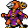
天狗の女王僧正坊: 天狗の女王。強力な戦士であるうえに、風の魔術の達人でもある。 - K
 優美なる暗殺者ソーニャ: コボルドの暗殺者。クラーレ毒の吹き矢針と、たちの悪いブランドの付いた短剣をいつも持っている。
優美なる暗殺者ソーニャ: コボルドの暗殺者。クラーレ毒の吹き矢針と、たちの悪いブランドの付いた短剣をいつも持っている。 - g
 独創的な養蜂家スプロッズ: コグリンの鍛冶師。ぜんまい仕掛けの蜂の射出とナジャの打撃式焼き入れを使い、ときどき鍛造術の魔法書を落とす。
独創的な養蜂家スプロッズ: コグリンの鍛冶師。ぜんまい仕掛けの蜂の射出とナジャの打撃式焼き入れを使い、ときどき鍛造術の魔法書を落とす。 - @
 歴戦のテレンス: 退役軍人。老後を過ごす場所に、よりによって迷宮を選んだ。
歴戦のテレンス: 退役軍人。老後を過ごす場所に、よりによって迷宮を選んだ。 - o
 オークの槍投手ウルグ: 隻眼のオーク。ジャベリンの束と、普通のオークより重い武器を持っている。
オークの槍投手ウルグ: 隻眼のオーク。ジャベリンの束と、普通のオークより重い武器を持っている。 - 9
 追放者Vv: 迷宮のはるか下の領域から上がってきた、生きた石でできた奇妙な生き物。炎と冷気の両方を操る。
追放者Vv: 迷宮のはるか下の領域から上がってきた、生きた石でできた奇妙な生き物。炎と冷気の両方を操る。 - g
 砲手ドワーフ ウィーグラフ: オカワルに仕えるドワーフの砲手。ジョセフから帽子を取り返し、容赦ない手段とばかでかい大砲でそれを守り抜くつもりでいる。
砲手ドワーフ ウィーグラフ: オカワルに仕えるドワーフの砲手。ジョセフから帽子を取り返し、容赦ない手段とばかでかい大砲でそれを守り抜くつもりでいる。 - D
 古代竜ザッハ: 太古から生きる、並外れて強力なファイアドラゴン。敵を麻痺させ、炎から逃げられなくしてくる。
古代竜ザッハ: 太古から生きる、並外れて強力なファイアドラゴン。敵を麻痺させ、炎から逃げられなくしてくる。 - a
 シェザを求める者ゼナータ: 体の一部を金属の仕掛けに置き換えた武器職人。宙を舞う武器の群れを操る。
シェザを求める者ゼナータ: 体の一部を金属の仕掛けに置き換えた武器職人。宙を舞う武器の群れを操る。


蛇穴のユニーク
蜘蛛の穴ぐらのユニーク
沼のユニーク
浅瀬のユニーク
- m
 海流の魔女イルスィウ: 腕の立つ水棲の民の水占術師。同族を大勢引き連れていることが多い。
海流の魔女イルスィウ: 腕の立つ水棲の民の水占術師。同族を大勢引き連れていることが多い。 - C
 目敏き羊飼いポリュペモス: 人食いヤクとカトブレパスの群れをどうにか手なずけたサイクロプス。侵入者がいれば、喜んでそれを投げつけてくる。
目敏き羊飼いポリュペモス: 人食いヤクとカトブレパスの群れをどうにか手なずけたサイクロプス。侵入者がいれば、喜んでそれを投げつけてくる。
スライムの穴ぐらのユニーク
- J
 ジーヴァの大司祭 溶解者: 知性を持つジェリー。スライムの神にたてつく者を探して、岩の壁を食い破りながら進んでくる。
ジーヴァの大司祭 溶解者: 知性を持つジェリー。スライムの神にたてつく者を探して、岩の壁を食い破りながら進んでくる。 - J
 ロイヤルジェリー: ジーヴァの筆頭の信者で、ぬめりのルーンの守り手。ジェリーを次々と吐き出して、侵入者をたちまち押し流してしまう。もしこれを倒せたら、スライムの神も一緒に死ぬ。
ロイヤルジェリー: ジーヴァの筆頭の信者で、ぬめりのルーンの守り手。ジェリーを次々と吐き出して、侵入者をたちまち押し流してしまう。もしこれを倒せたら、スライムの神も一緒に死ぬ。
地獄のユニーク
- &
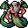
地獄の門番ゲリュオン: 三つ首のゲリュオンは地獄の入り口を取り仕切っている。その先の本物の地獄に入りたいなら、まずゲリュオンとその手下を倒さなければならない。 - z
 物言う髑髏マーリー: 並外れてしぶとい呪いの頭蓋骨。噛みつきも厄介だが、死霊術の呪文はもっと厄介だ。
物言う髑髏マーリー: 並外れてしぶとい呪いの頭蓋骨。噛みつきも厄介だが、死霊術の呪文はもっと厄介だ。 - D
.png)
.png)
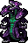
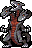
地獄のサーペント: 三つ首の悪魔の竜。どの地獄の分岐で出会うかによって性質が変わる。 - C
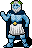
コキュートスの番人アンテウス: 氷のルーンの守り手。ゲーム中で文句なしに一番打たれ強い敵で、手下には頼らず、自分の巨体と強力な冷気と電撃の魔法で侵入者を叩き潰そうとする。 - &
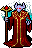
ゲヘナの王子アスモデウス: 黒曜石のルーンの守り手。火炎耐性が足りない侵入者は、アスモデウスとその手下にあっという間に焼き尽くされる。 - &
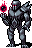
鉄の都の王ディスペータ: 鉄のルーンの守り手。強力な地の魔術と、強大な悪魔の軍勢で冒険者を叩き潰す。 - &
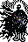
タルタロスの女王エレシュキガル: 骨のルーンの守り手。エレシュキガルとその僕に挑む者は、生命力を根こそぎ吸い取られるおそれがある。

.png){kind=link}
.png){kind=link}


パンデモニウムのユニーク
- 1
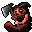
処刑の達人イグナシオ: 褒美として悪魔の身を与えられ、処刑の悪魔になった元人間。今でもお気に入りの処刑人の斧を持ち歩いている。 - &
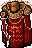
炎と鉄の魔王セレボブ: 火のルーンの守り手で、バルログの大軍を従える。標的の火炎耐性をはぎ取る愛用の剣を振るう。おそらくゲーム全体でもっとも危険な敵だ。 - &
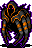
暗闇の魔王グロオルクス・ヴロック: 暗黒のルーンの守り手で、大勢の処刑の悪魔を率いる。ひどく素早く、生者にもアンデッドにも恐ろしく危険な相手だ。 - &
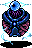
禁じられし知識の魔王ロム・ロボン: 魔法のルーンの守り手で、魔術師の結社の長。手下に加えて、本人も極めて強力な氷と雷の魔法を使いこなす。 - &
 混沌の魔王ムノレグ: 輝きのルーンの守り手で、おぞましいもの、触手のあるもの、変異をもたらすものすべての主。ムノレグとその僕にかかれば、どんなに屈強な戦士もたちまち異形にされてしまう。
混沌の魔王ムノレグ: 輝きのルーンの守り手で、おぞましいもの、触手のあるもの、変異をもたらすものすべての主。ムノレグとその僕にかかれば、どんなに屈強な戦士もたちまち異形にされてしまう。


ゾットの領域のユニーク
ダンジョンスプリントのユニーク
- C
 収集者チャック: 岩の巨人。帰還のブランドが付いた大岩を持ち、時代錯誤なほどイカした帽子をかぶっている。
収集者チャック: 岩の巨人。帰還のブランドが付いた大岩を持ち、時代錯誤なほどイカした帽子をかぶっている。 - Y
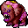
興業の星ネリー: 獰猛さでも可愛らしさでも、ふつうの地獄の象はネリーの足元にも及ばない。

削除されたユニーク
- @
 マイケル: ごく基本的な呪文しか持っていなかった、人間の呪文使い。
マイケル: ごく基本的な呪文しか持っていなかった、人間の呪文使い。 - @
 デュエイン: 耳の大きな傭兵。能力はいたって並だった。
デュエイン: 耳の大きな傭兵。能力はいたって並だった。 - @
 フランシス: いろいろな呪文を持っていた年老いた魔術師。
フランシス: いろいろな呪文を持っていた年老いた魔術師。 - @
 ノーバート: これといった特徴のない人間の戦士。
ノーバート: これといった特徴のない人間の戦士。 - p
 テルプシコラー: 近くの武器に命を吹き込んで味方にする予定だったファントム。
テルプシコラー: 近くの武器に命を吹き込んで味方にする予定だったファントム。 - @
 ヨゼフ: 相手に毒を与えて減速させてから、接近戦に持ち込むか、スリングの弾を浴びせてくる傭兵だった。
ヨゼフ: 相手に毒を与えて減速させてから、接近戦に持ち込むか、スリングの弾を浴びせてくる傭兵だった。 - c
 パン: サテュロス。うろつく冒険者の動きを封じ、そのあいだに仲間が遠くから仕留める、という役回りになるはずだった。
パン: サテュロス。うろつく冒険者の動きを封じ、そのあいだに仲間が遠くから仕留める、という役回りになるはずだった。 - N
 ラミア: 息をのむほど美しいが、人を食らう狂気のナーガの女王で、魔術も使った。
ラミア: 息をのむほど美しいが、人を食らう狂気のナーガの女王で、魔術も使った。 - @
 忘れられしモード: 遠い国から来た戦士の姫。たいてい珍しい武器を使っていた。
忘れられしモード: 遠い国から来た戦士の姫。たいてい珍しい武器を使っていた。
生成
どのゲームでもユニークはそれなりの数が出てくるが、ほとんどのユニークは必ず現れるとは限らない。必ず現れるのは次のものだけだ。
- ロイヤルジェリー
- ゲリュオン
- 地獄のサーペント
- 地獄の君主であるユニーク 4 体: アンテウス、アスモデウス、エレシュキガル、ディスペータ
- パンデモニウムの君主であるユニーク 4 体: セレボブ、グロオルクス・ヴロック、ロム・ロボン、ムノレグ
ソースコードの注
mon-flags.h より:
/// monster is a unique M_UNIQUE = BIT(21),
変更履歴
- 0.35 でゴジが追加される予定。
- 0.34 でカサンドラが追加された。
- 0.33 で名無しとスプロッズが追加された。
- 0.32 でザックリクシスが追加され、オークのブロークが吸血オークのブロークラに作り直され、ウィーグラフが復活した。
- 0.31 でジェレマイアが追加され、ノリスが復活した。
- 0.29 でアマイモン、グルン、ジョセフィーナ、ロドゥル、Vv、ゼナータが追加された。
- 0.28 でムリオグロトルが追加された。
- 0.25 でマギーが追加された。
- 0.22 より前は、浅瀬が生成されれば必ずイルスィウが現れた。
- 0.19 でウィーグラフ、ノリス、モードが削除され、白娘子が追加された。
- 0.18 で鉄の巨人がスプリント専用のユニークから普通のモンスターになった。
- 0.16 でロビンが追加された。
- 0.15 で、4.1 にならってほとんどのユニークに専用の称号がついた。
- 0.14 でラミアが削除され、ナターシャ、ヴァシュニア、アステリオンが追加された。
- 0.13 で僧正坊が追加された。パンは開発中に追加され、そのまま削除された。
- 0.12 でラミアとジョーグルンが追加された。
- 0.11 でヨゼフが削除された。
- 0.8 でフランシス、デュエイン、ノーバートが削除された。テルプシコラーも検討されたが、開発中に結局見送られた。
- 0.7 でグラインダーが追加された。
- 0.6 でマイケルが削除され、狂人ヰゥフ、パーギー、グルム、メンカウラー王、ピケル、モーリス、ガストロノク、キルケー、アイズル、マーラが追加された。レルネーのヒドラも有効になった。
- 0.5 でネッソスと溶解者が追加された。レルネーのヒドラもコードには入ったが、まだどこにも配置されていなかった。
- 0.3 でポリュペモスが追加された。
- 0.2 でティアマトが追加された。